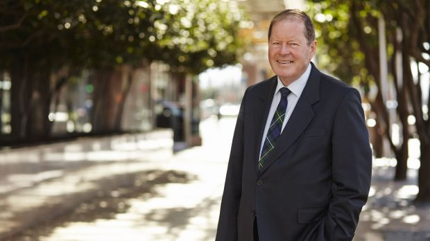

Call: 027 445 3455
Email: g.thompson@fleetwood.nz

I am a Consultant with particular interests in forestry and environmental matters having retired from legal firm Duncan Cotterill from July 2015.
My legal career of over 50 years involved local and international business, governance and structuring together with a particular interest in trusts.
I am currently Chair of the Forest Growers Levy Trust, the Plantation Forestry Industry Organisation and Chair of several forestry companies including United Forestry Management Ltd, an Australian and Chinese backed company established to aggregate small and medium scale forests to gain scale benefits.
I am also involved in climate change issues as co-Convener of the National Party’s Bluegreens policy group and member of the 2011 Emission Trading Scheme Review Panel.
I have previously practiced as senior commercial partner in legal firm Kiely Thompson Caisley and other Wellington firms.
I had a term as Crown Counsel in Hong Kong and a period as a member of Parliament going on to become the President of the New Zealand National Party.